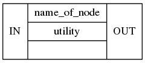
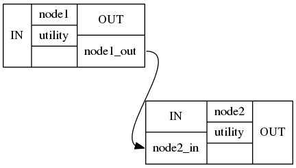

Nodes¶
From the Interface tutorial, you learned that interfaces are the core pieces of Nipype that run the code of your desire. But to streamline your analysis and to execute multiple interfaces in a sensible order, you have to put them in something that we call a Node.
In Nipype, a node is an object that executes a certain function. This function can be anything from a Nipype interface to a user-specified function or an external script. Each node consists of a name, an interface category and at least one input field, and at least one output field.
Following is a simple node from the utility interface, with the name name_of_node, the input field IN and the output field OUT:

Once you connect multiple nodes to each other, you create a directed graph. In Nipype we call such graphs either workflows or pipelines. Directed connections can only be established from an output field (below node1_out) of a node to an input field (below node2_in) of another node.

This is all there is to Nipype. Connecting specific nodes with certain functions to other specific nodes with other functions. So let us now take a closer look at the different kind of nodes that exist and see when they should be used.
Example of a simple node¶
First, let us take a look at a simple stand-alone node. In general, a node consists of the following elements:
nodename = Nodetype(interface_function(), name='labelname')
nodename: Variable name of the node in the python environment.
Nodetype: Type of node to be created. This can be a
Node,MapNodeorJoinNode.interface_function: Function the node should execute. Can be user specific or coming from an
Interface.labelname: Label name of the node in the workflow environment (defines the name of the working directory)
Let us take a look at an example: For this, we need the Node module from Nipype, as well as the Function module. The second only serves a support function for this example. It isn’t a prerequisite for a Node.
# Import Node and Function module
from nipype import Node, Function
# Create a small example function
def add_two(x_input):
return x_input + 2
# Create Node
addtwo = Node(Function(input_names=["x_input"],
output_names=["val_output"],
function=add_two),
name='add_node')
As specified before, addtwo is the nodename, Node is the Nodetype, Function(...) is the interface_function and add_node is the labelname of the this node. In this particular case, we created an artificial input field, called x_input, an artificial output field called val_output and specified that this node should run the function add_two().
But before we can run this node, we need to declare the value of the input field x_input:
addtwo.inputs.x_input = 4
After all input fields are specified, we can run the node with run():
addtwo.run()
temp_res = addtwo.run()
temp_res.outputs
And what is the output of this node?
addtwo.result.outputs
Example of a neuroimaging node¶
Let’s get back to the BET example from the Interface tutorial. The only thing that differs from this example, is that we will put the BET() constructor inside a Node and give it a name.
# Import BET from the FSL interface
from nipype.interfaces.fsl import BET
# Import the Node module
from nipype import Node
# Create Node
bet = Node(BET(frac=0.3), name='bet_node')
In the Interface tutorial, we were able to specify the input file with the in_file parameter. This works exactly the same way in this case, where the interface is in a node. The only thing that we have to be careful about when we use a node is to specify where this node should be executed. This is only relevant for when we execute a node by itself, but not when we use them in a Workflow.
# Specify node inputs
bet.inputs.in_file = '/data/ds000114/sub-01/ses-test/anat/sub-01_ses-test_T1w.nii.gz'
bet.inputs.out_file = '/output/node_T1w_bet.nii.gz'
res = bet.run()
As we know from the Interface tutorial, the skull stripped output is stored under res.outputs.out_file. So let’s take a look at the before and the after:
from nilearn.plotting import plot_anat
%matplotlib inline
import matplotlib.pyplot as plt
plot_anat(bet.inputs.in_file, title='BET input', cut_coords=(10,10,10),
display_mode='ortho', dim=-1, draw_cross=False, annotate=False);
plot_anat(res.outputs.out_file, title='BET output', cut_coords=(10,10,10),
display_mode='ortho', dim=-1, draw_cross=False, annotate=False);
Exercise 1¶
Define a Node for IsotropicSmooth (from fsl). Run the node for T1 image for one of the subjects.
# write your solution here
# Import the Node module
from nipype import Node
# Import IsotropicSmooth from the FSL interface
from nipype.interfaces.fsl import IsotropicSmooth
# Define a node
smooth_node = Node(IsotropicSmooth(), name="smoothing")
smooth_node.inputs.in_file = '/data/ds000114/sub-01/ses-test/anat/sub-01_ses-test_T1w.nii.gz'
smooth_node.inputs.fwhm = 4
smooth_node.inputs.out_file = '/output/node_T1w_smooth.nii.gz'
smooth_res = smooth_node.run()
Exercise 2¶
Plot the original image and the image after smoothing.
# write your solution here
from nilearn.plotting import plot_anat
%pylab inline
plot_anat(smooth_node.inputs.in_file, title='smooth input', cut_coords=(10,10,10),
display_mode='ortho', dim=-1, draw_cross=False, annotate=False);
plot_anat(smooth_res.outputs.out_file, title='smooth output', cut_coords=(10,10,10),
display_mode='ortho', dim=-1, draw_cross=False, annotate=False);